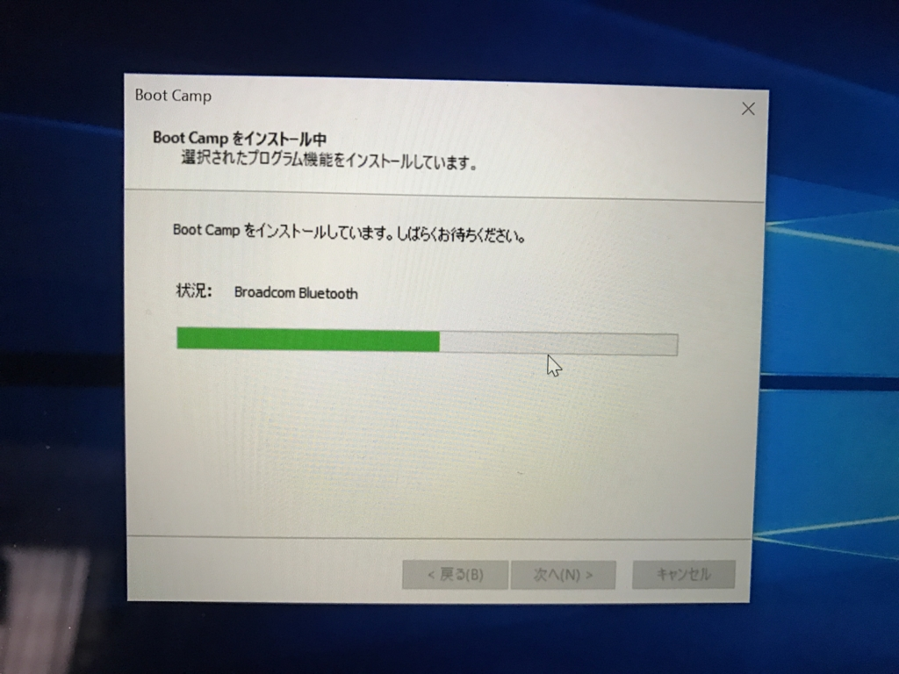
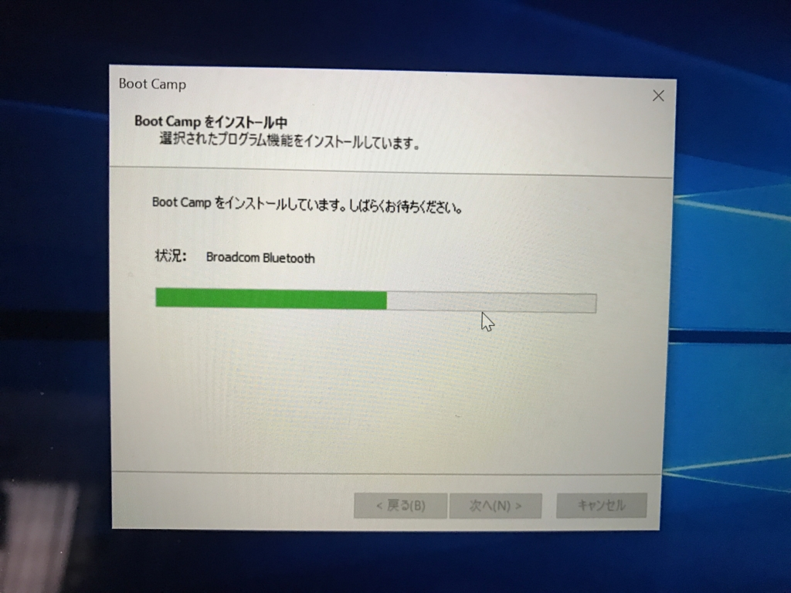

MacBook に Boot Camp をインストールするとブルースクリーンが出る
公開日：

症状
2016/12/10
MacBook に Boot Camp で Windows 10 をインストールしている環境で誤ってドライバーのアップデートをしてしまい（これで遊んでいたのさ）、システムの一部を破損させた（Wi-Fi が繋がらない → 補修するとキーボードが効かなくなった）。
Mac 環境に戻って Boot Camp パーティションを削除＆再セットアップを試みるが――
 

Broadcom Bluetooth をインストールする段階で SYSTEM_THREAD_EXCEPTION_NOT_HANDLED エラーが発生する。
、Nokia N1、新しいMacBook、GOOGLE PIXEL対応 (16GB, x5000m - シルバー)")
せっかく USB-C な USB メモリまで買ったのに（号泣
対処
USB メモリのなかにドライバーを見つけたので、手動でひとつずつ入れてみたが、どうもうまくいかない。しょうがないので、数日間 Mac として利用する羽目になった。
2016/12/14
@daruyanagi macOS のアップデートしたら Boot Camp 直るかもしれんで
— しばやん (@shibayan) 2016年12月14日
macOS Sierra 10.12.2 というのが出ているらしいので、それにアップデートして Boot Camp 環境を再構築してみた。
結果的にはこれがビンゴだったらしく、Windows 10 環境を取り戻すことができましたとさ！（仮想環境にしろよという人もいるけど、仮想環境では動かないアプリもあるんだよ）
教訓
- Boot Camp ドライバーのアップデートは Apple さまがお恵み下さるものだけにしておく
- macOS のアップデートで Boot Camp も新しくなってる可能性がある。試してみよう